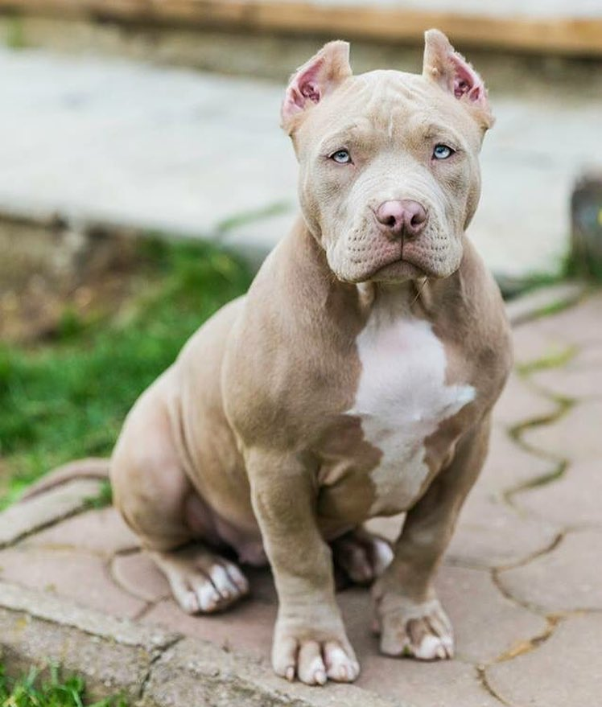
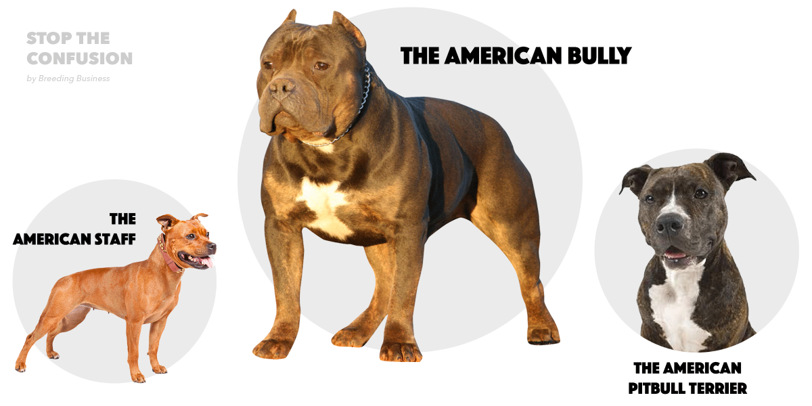

Dog behavior is the internally coordinated responses (actions or inactions) of the domestic dog (individuals or groups) to internal and external stimuli.[57] As the oldest domesticated species, dogs' minds inevitably have been shaped by millennia of contact with humans. As a result of this physical and social evolution, dogs have acquired the ability to understand and communicate with humans more than any other species and they are uniquely attuned to human behaviors.[11] Behavioral scientists have uncovered a surprising set of social-cognitive abilities in domestic dogs. These abilities are not possessed by the dog's closest canine relatives or other highly intelligent mammals, such as great apes, but rather parallel to children's social-cognitive skill
Dogs are the most variable mammal on earth with around 450 globally recognized dog breeds.[9] In the Victorian era, directed human selection developed the modern dog breeds, which resulted in a vast range of phenotypes.[7] Most breeds were derived from small numbers of founders within the last 200 years,[7][9] and since then dogs have undergone rapid phenotypic change and were formed into today's modern breeds due to artificial selection imposed by humans. The skull, body, and limb proportions vary significantly between breeds, with dogs displaying more phenotypic diversity than can be found within the entire order of carnivores. These breeds possess distinct traits related to morphology, which include body size, skull shape, tail phenotype, fur type and colour.[7] Their behavioural traits include guarding, herding, and hunting,[7] retrieving, and scent detection. Their personality traits include hypersocial behavior, boldness, and aggression,[9] which demonstrates the functional and behavioral diversity of dogs.[7] As a result, today dogs are the most abundant carnivore species and are dispersed around the world.[9] The most striking example of this dispersal is that of the numerous modern breeds of European lineage during the Victorian era
Domestic dogs inherited complex behaviors, such as bite inhibition, from their wolf ancestors, which would have been pack hunters with a complex body language. These sophisticated forms of social cognition and communication may account for their trainability, playfulness and ability to fit into human households and social situations. These attributes have given dogs a relationship with humans that has enabled them to become one of the most successful animals today.[99] The dogs' value to early human hunter-gatherers led to them quickly becoming ubiquitous across world cultures. Dogs perform many roles for people, such as hunting, herding, pulling loads, protection, assisting police and the military, companionship and aiding disabled individuals. This influence on human society has given them the nickname "man's best friend" in the Western world. In some cultures, however, dogs are also a source of meat.[100][101]